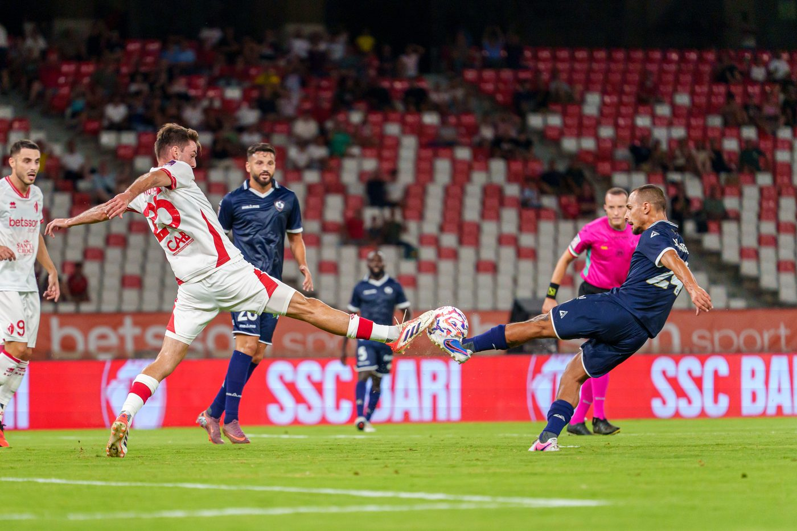

CUORE BIANCOROSSO
Un racconto che non finisce con il fischio finale. Cuore Biancorosso è il diario fotografico di una stagione seguita dal bordo campo e dagli spalti, partita dopo partita: le prime volte, i derby, le serate storte e quelle che restano. Ogni capitolo è una giornata a sé, e la raccolta cresce man mano che il calendario va avanti.
BARI — CAVESE
Il primo San Nicola della stagione. Le curve che si riempiono prima del fischio d’inizio, le sciarpe alzate sull’inno, l’attesa di capire che squadra sarà. Ho fotografato soprattutto quello che succedeva intorno al campo.
ALTAMURA — BARI
Fuori casa, su un campo piccolo e sotto i riflettori, con la curva ospite attaccata al rettangolo di gioco. Novanta minuti di corse, duelli e stacchi di testa, fino al gol che sblocca la serata e alla squadra sotto il settore a fine partita.
La raccolta è aperta: ogni nuova partita seguita diventa un capitolo in fondo a questa pagina.